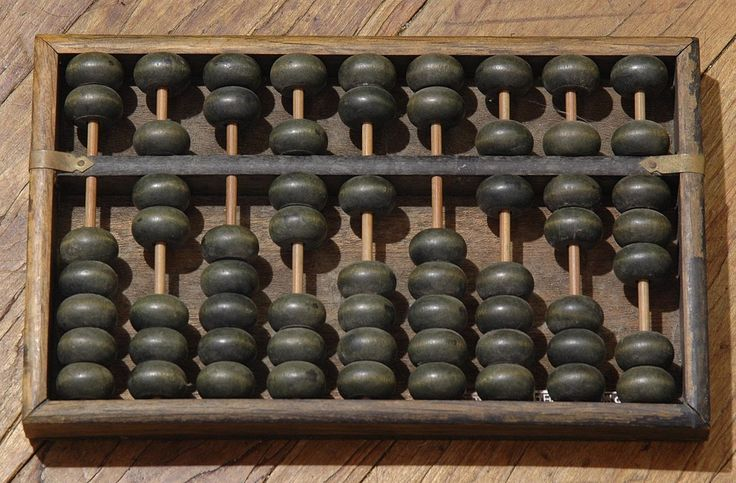
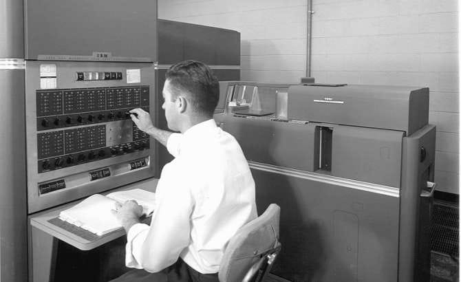

Historia de las computadoras (1940–1956) — La primera generación
🕰 Contexto histórico
Surgieron durante y después de la Segunda Guerra Mundial.
Se necesitaban máquinas rápidas para cálculos militares, criptoanálisis y ciencia.
Nacieron las primeras computadoras electrónicas digitales y el concepto de programa almacenado.
⚙️Características principales
Tecnología: Tubos de vacío.
Lenguaje: Código máquina o ensamblador.
Memoria: Muy limitada (tambores magnéticos, líneas de retardo).
Velocidad: Miles de operaciones por segundo.
Interfaz: Interruptores, tarjetas perforadas.
Tamaño: Ocupaban salas enteras, pesaban toneladas.
Consumo: Muy alto.
Confiabilidad: Baja (tubos fallaban con frecuencia).
Uso: Militar, científico y censos.

💡 Computadoras destacadas
Zuse Z3 (1941): Primera computadora programable.
ABC (1942): Primera computadora electrónica digital.
Colossus (1943): Rompía códigos nazis.
Harvard Mark I (1944): Cálculos navales para EE. UU.
ENIAC (1945): Primera computadora electrónica de propósito general.
EDSAC (1949): Una de las primeras con programa almacenado.
UNIVAC I (1951): Primera computadora comercial.
IBM 701 (1953): Inició la era de IBM en computación científica.

⚠️Limitaciones
Muy costosas.
Solo accesibles a gobiernos y grandes instituciones.
Difíciles de programar y mantener.
🌍Impacto
Revolucionaron la ciencia y el ámbito militar.
Impulsaron la criptografía y la predicción del clima.
Dieron origen a la industria informática moderna.
Iniciaron el camino hacia las computadoras de uso general.